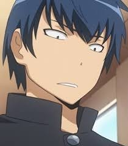
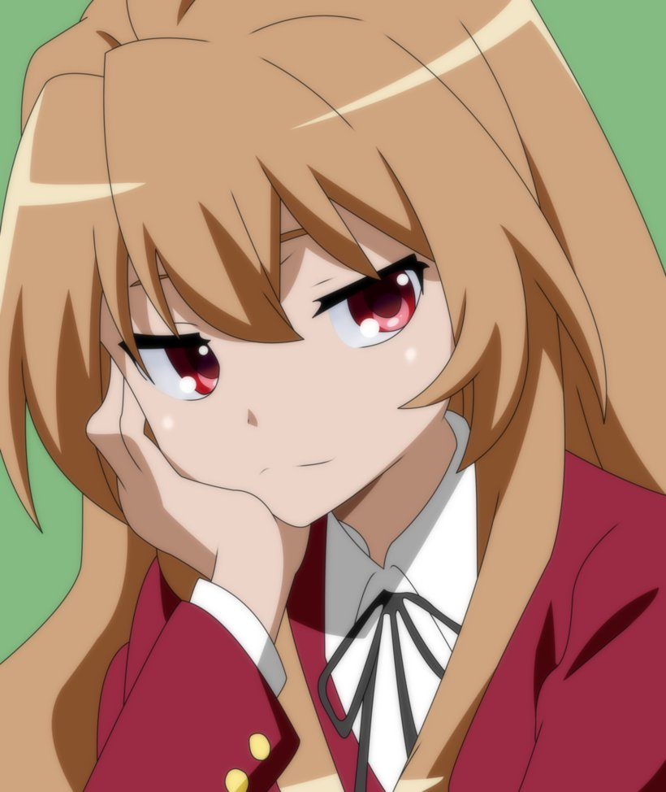
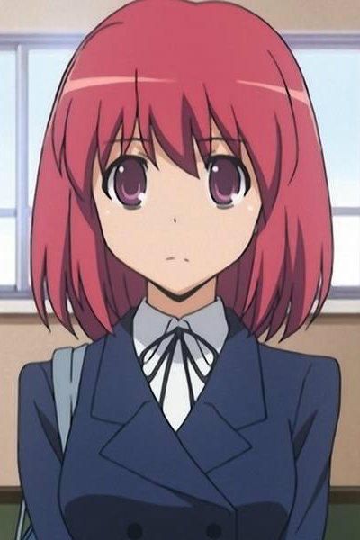
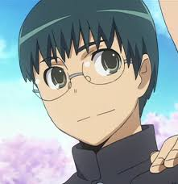
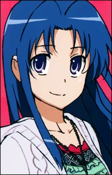

| MAIN CHARACTERS! |
| Ryuuji Takasu |
 |
The series' main male protagonist. Ryuuji is a seventeen-year-old high school student in his second year, in class 2-C. Due to biological inheritance, his sanpaku eyes make him look like an intimidating delinquent and cause many misunderstandings. He lives in a fatherless family with just his mother and, due to this, Ryuuji has learned to be self-sufficient. He is good at cooking and keeps everything in his house clean (to the point of obsession), and also excels at sewing. |
| Aisaka Taiga |
 |
The main female protagonist of the Toradora! series. Due to her often snapping at others in brutal ways and her short stature, she is given the nickname "Palmtop Tiger". Essentially, Taiga is meant to be a deconstruction of the tsundere, showing rapid mood swings, being emotionally unstable, and making poor decisions based solely on emotions. |
| Minori Kushieda |
 |
one of the series' female protagonists. Minori is a girl in Ryuuji's class, Class 2-C and is Taiga Aisaka's best friend. She is also known by the pet name "Minorin" (as a form of friendly affection). |
| Yusaku Kitamura |
 |
is in Class 2-C with Taiga, Ryuuji, Minori and Ami. He is the secondary male protagonist, after Ryuuji. He's also the student council's vice-president and later becomes the president of the student council. |
| Ami Kawashima |
 |
one of the series' heroines. She has a deep understanding of the relationship situation going on between Minori, Ryuuji, Taiga, and herself. |